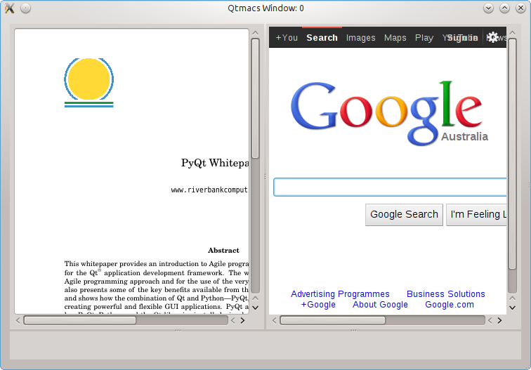
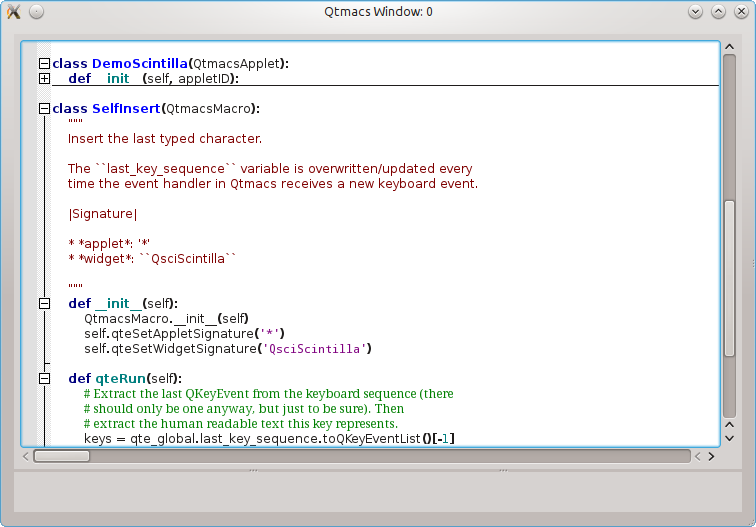
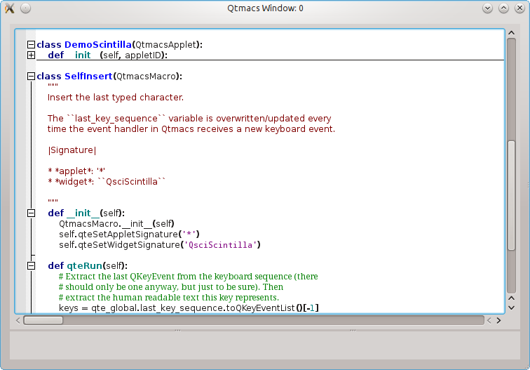
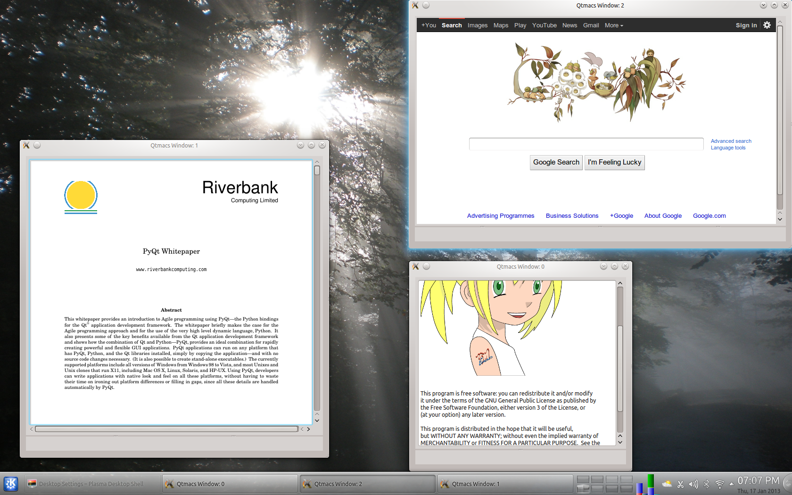
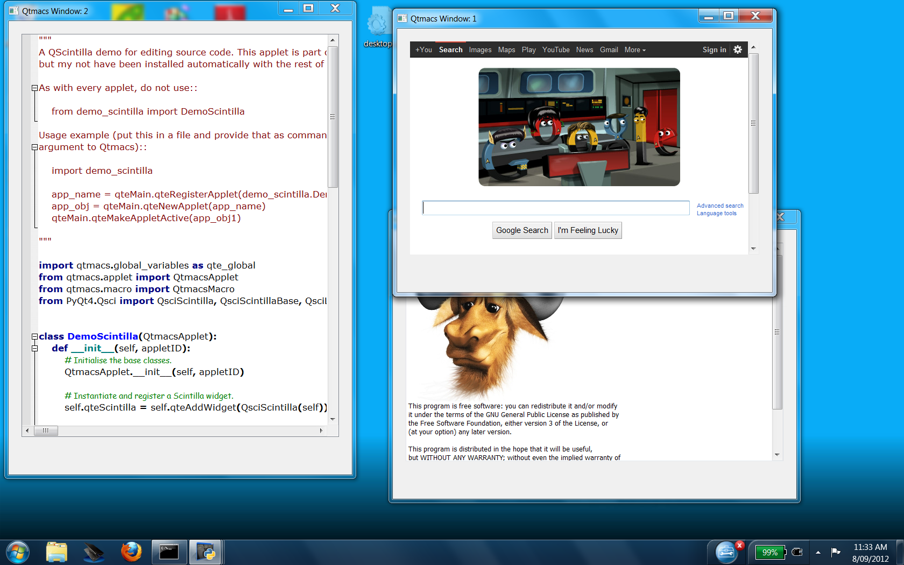

The Qtmacs Project¶
Introduction¶
Qtmacs (short for Qt-macros) is an Emacs inspired macro framework for Qt. It is written entirely in PyQt4, provides a uniform macro interface to interact with Qt widgets, and can group widgets into logically independent applets. The screenshots below show applet examples to edit rich text, write code, read PDF files, or browse the web.


 
Multiple applets in a single Qtmacs window.

Multiple applets in a single Qtmacs window.
  Qtmacs with multiple windows on Kubuntu 12.10 (left) and Windows 7 (right).
Applets are dynamically loaded PyQt programs to define and augment the functionality of Qtmacs. Likewise, macros can also be loaded and altered at runtime to customise the applet behaviour. Both can draw on the entire Qt library and third-party PyQt modules to fullfill their purpose. Together, they can furnish a fully customised work environment.
Purpose¶
A just-for-fun project to see if it can be done.
Documentation¶
This is the documentation of Qtmacs. Notable points of interest are probably the installation instructions, the brief Qtmacs tour to explain basic shortcuts, and the equally brief descriptions of the current applets.
If you are interested in writing applets- and macros for Qtmacs yourself then the tutorial section and API documentation will get you started (if not, let me know).
To learn more about the Qtmacs philosophy (and the logo) see the concept section.
License¶
Qtmacs is licensed under the terms of the GPL.
Development Status¶
Qtmacs is currently in alpha status but mature enough to demonstrate the basic concepts.
Contact¶
If you have any questions, feedback, or would like to help, please drop me a line at qtmacsdev@gmail.com.
Thank you for visiting my project page.

{kind=link}
{kind=link}
{kind=link}
{kind=link}